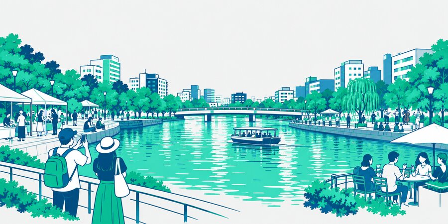

本事業における文脈の整理

01 歴史的背景
水辺に賑わいを生んだ、まちの記憶
黒田藩の時代、那珂川の水辺には芝居や相撲が呼び込まれ、福岡と博多をつなぐ賑わいの場が生まれた。

02 市の方針と計画
川に向かって開かれたまちへ
第10次福岡市基本計画やリバーフロントNEXTのもと、清流公園の整備や護岸のライトアップが進む。

03 今回の公募
作り手が集い、文化が生まれる舞台へ
水辺を舞台に音楽・アートを展開し、アーティストや事業者の参加を促す。那珂川ブランドの象徴に。

04 これからの展望
「那珂川では、面白いことが生まれる」
体験を求めて国内外から人が訪れる循環をつくり、期待と信頼をエリアのブランドとして定着させる。
コンセプトの構造
自然都市景観水面、架かる橋、水面に映る街の灯り
×
作り手が集う舞台・文化川の上のステージ、音楽、パフォーマンス＝遊び心
＝
文化景観人が集い、遊び、撮り、語り継ぐ、福岡を象徴する新しい景色 → 観光へ波及
イベントテーマ
FUKUOKA ON THE
RIVER FESTIVAL
RIVER FESTIVAL
ターゲット
メイン国内外の観光客（アジアからの訪日客・国内旅行者、20〜40代）
サブ都市圏の来街者（天神・中洲で夜を過ごす20〜40代）
METHOD 01
街そのものを演出する
川沿いのビル群や貴賓館エリア全体を空間演出し、ここでしか体験できない表現に。
効果景観という文化資産を持ち帰ってもらう
課題演出だけでは、まず見てもらうことができない
METHOD 02
人を呼ぶ力を招き入れる
集客力・発信力のあるアーティストを招聘し、地域のプレイヤーや事業者とともに体験をつくる。
効果アーティストの話題性による大きな集客
課題予算が大きく、本来かけるべき景観に回らない
→ ①②は単独では堂々巡りになる。両方を組み合わせて、景観と集客を同時に成立させる。